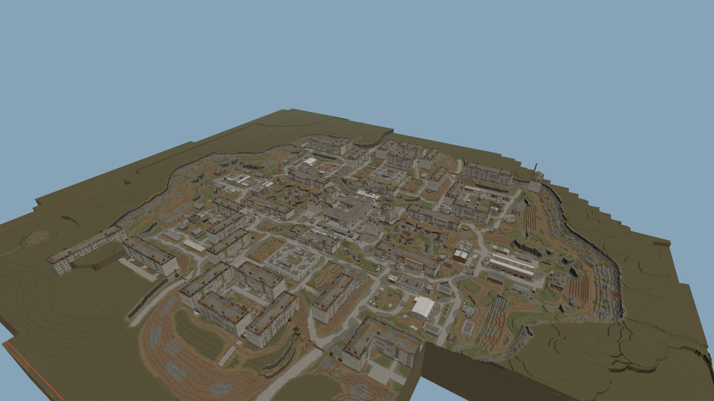
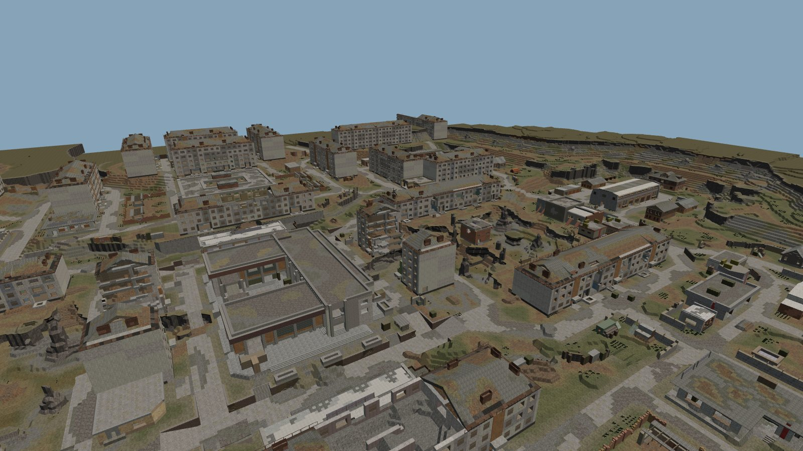

Короткий выпуск между большими. Никаких революций — мы доводим до ума то, чем кланы пользуются каждый вечер КВ: карты арен, экран проверки скриншота и прозрачность правок. И благодарим тех, без кого половины сервиса бы не было.
01 карты арен в работе
3D-карты для планировщика теперь собираются новым экспортёром — и в ближайшем обновлении переезжают в планировщик. Рельеф сглажен так же, как в игре, блоки берут настоящие текстуры и соединяются по тем же правилам, что в клиенте, а арена режется на квадраты 256×256, которые подгружаются по очереди — от центра к краям.


Хвойник в новой сборке — целиком и вблизи.
Карты строятся из кеша, который игра сохраняет, пока вы бегаете по локации, — а он у каждого свой и всегда неполный. Поэтому теперь мы сливаем кеш от нескольких игроков чанк за чанком: из двух копий берём ту, где больше блоков. Только Хвойнику это добавило 731 чанк сверх прежней сборки — целые кварталы, которые раньше обрывались.
В основе — открытый экспортёр карт DeTTK/SC_Map_Dump от создателей stalhub. Если хочется самим покопаться в данных карт — начинать стоит с него.
02 проверка скриншота новое
Экран проверки перестроен. Скриншот прижат к левому краю и занимает всё свободное место, распознанный список — справа узкой колонкой. На широком мониторе сводку КВ теперь видно целиком и крупно, без приближения.
Схема: строка, выбранная в таблице, подсвечена на скрине; ник подсказывается из состава.
03 прозрачность новое
Скрин можно поправить при подтверждении и позже из истории — и это правильно: распознавание ошибается. Но статистика клана — общая, и честность здесь важнее удобства. Поэтому каждая правка теперь записывается.
Условный пример записи.
04 спасибо
Половина того, что SCWA знает о предметах, пришла от oarer. База предметов с разобранными характеристиками и допстатами артефактов, математика калькулятора сборок — всё это его открытая работа. Без неё редактора снаряжения в нынешнем виде просто не было бы.
Спасибо словами мы уже говорили. Поэтому теперь в разделе карт, в углу планировщика, крутится печенька. Наведите на неё — и она скажет спасибо проекту stalhub.dev целиком.
05 прочее
Совсем ничего. Радар чистый, в небе над ареной тихо. Проходите, не задерживайтесь.
Помехи. Не обращайте внимания.
поддержать проект
Всё из этого выпуска доступно всем кланам без подписок и ограничений. Но у сервиса есть реальные расходы, и если он помогает вашему клану, вы можете поддержать разработку.
Донат не влияет на доступ к функциям — он только ускоряет выход обновлений. Спасибо, что играете с нами.